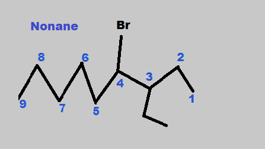
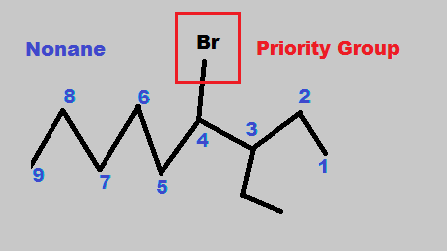
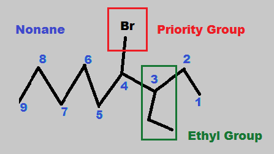
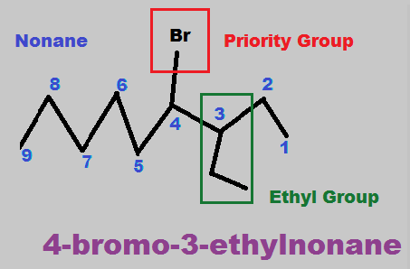

Nomenclature Principles
Identifying the Parent Chain
The first step involves finding the parent chain. Parent chains are the longest chains that result when naming the carbons. After the number of carbons are counted, we can use the table below to determine the prefix (for carbons <= 10). In this example below, nine carbons corresponds to the prefix "non." Remember that for every node (also called branch point), select the chain with the greater number of carbons. If both sides of the node have the same number of carbons (such as in carbon 3 in the example below), any of the sides can be chosen and the answer will be the same. Also, remember to number the chains such that the substituents have the lowest possible combination of numbers (more on this in the next section).
Reference the Table Below for Nomenclature Guidance
| Parent Chain Prefixes and Naming | |||||||||
|---|---|---|---|---|---|---|---|---|---|
| Number of Carbons |
Prefix | Alkane | Alkene | Alkyne | Alcohol | Ketone | Aldehyde | Carboxylic Acid | Nitrile |
| 1 | Meth- | Methane | N/A | N/A | Methanol | N/A | N/A | Methanoic Acid | Methanenitrile |
| 2 | Eth- | Ethane | Ethene | Ethyne | Ethanol | N/A | Ethanal | Ethanoic Acid | Ethanenitrile |
| 3 | Prop- | Propane | Propene | Propyne | Propanol | Propanone | Propanal | Propanoic Acid | Propanenitrile |
| 4 | But- | Butane | Butene | Butyne | Butanol | Butanone | Butanal | Butanoic Acid | Butanenitrile |
| 5 | Pent- | Pentane | Pentene | Pentyne | Pentanol | Pentanone | Pentanal | Pentanoic Acid | Pentanenitrile |
| 6 | Hex- | Hexane | Hexene | Hexyne | Hexanol | Hexanone | Hexanal | Hexanoic Acid | Hexanenitrile |
| 7 | Hept- | Heptane | Heptene | Heptyne | Heptanol | Heptanone | Heptanal | Heptanoic Acid | Heptanenitrile |
| 8 | Oct- | Octane | Octene | Octyne | Octanol | Octanone | Octanal | Octanoic Acid | Octanenitrile |
| 9 | Non- | Nonane | Nonene | Nonyne | Nonanol | Nonanone | Nonanal | Nonanoic Acid | Nonanenitrile |
| 10 | Dec- | Decane | Decene | Decyne | Decanol | Decanone | Decanal | Decanoic Acid | Decanenitrile |
Determining Priority Groups
Now, that we have determined the parent chain, we will identify the substituents hanging off the parent chain and their priority. An important thing to remember with susbtitutents is that we always give the highest prioroty (in other words the lowest Carbon number) to certain substituents over others. In this example, the Bromine is a halogen hanging off the parent chain, making this molecule an alkyl halide. We learned in the previous section that alkyl halides have priority. For this reason, this substituent is given the higher priority. Higher priority means that during naming, that substitudent gets the lower number. As we can see, the Bromine is on position 4. Had we started numbering on the other side, then this Bromine would have corresponded to position 5, resulting in the incorrect answer. For determining priority, a good rule of thumb is to look at the oxidation state of the carbon. If carbon is attached to a species like the halogens or a nitrogen or oxygen, then that group has priority.
Identifying Loci of Substituents
Now, that we have determined the parent chain and priority groups, we are almost ready to finally name the compound. But first, we have to identify the locus (or loci when we have multiple substituents) and name of the substituents. In the carbon chain we have already numbered, we will identify groups not having the blue number on it and determine its name. In the picture below, we first notice an ethyl group at position 3. Alongside this, our priority group, the Bromine is on position 4.
Putting the Name Together
Now, that we have determined the parent chain and priority groups with their locations, let's put it all together. We first determined that we have a nonane as the parent chain. Then we determined that we have a Bromine (bromo group) at position 4 as well as an ethyl group at position 3. For this step, we need to remember a few rules.
- The parent name goes all the way at the end of the name
- Substituent coming early in the alphabet is written first in the
name (not including the parent, which always goes at the end). - The location of the substituent precedes the name.
Hence, we see that bromo comes first alphabetically than ethyl, so we put that first in the name, with the location preceding the name, so we get 4-bromo. Next, we will specify the position of the ethyl group, which is at position 3 and expand upon the name. So now, we have 4-bromo-3-ethyl. Finally, we will append the parent name at the end, to get the final name as 4-bromo-3-ethylnonane.
